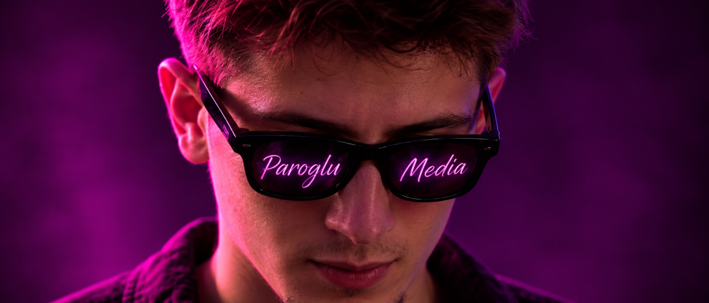

Hakkımda

Kişisel marka,
tek bakışta.
Video, fotoğraf, tasarım ve dijital üretimin ortak hissi tek bir çatı altında birleşiyor. Bu görsel de o dili daha ilk saniyede hissettiren imza bir açılış karesi olarak yerleştirildi.
Bir işi sadece üretmiyorum; nasıl hatırlanacağını da düşünüyorum.
24 yaşındayım. Dört yılı aşkın süredir profesyonel olarak reklam ajansı dünyasının içinde video, fotoğraf, grafik tasarım, sosyal medya ve içerik üretimi üzerine çalışıyorum. Bu sürecin öncesinde de amatör olarak görsel üretim yapıyordum.
Paroglu Media; Reels kurgusundan çekime, fotoğraftan tasarıma, drone görüntülerinden web deneyimlerine kadar farklı disiplinleri tek bir görsel bakış altında topladığım kişisel kreatif markam. Amacım tek tek “işler” çıkarmaktan çok, markanın nasıl göründüğünü ve nasıl hatırlandığını güçlendirmek.
Bir projede gerektiğinde kamera arkasında, gerektiğinde kurgu masasında, gerektiğinde tasarım ekranında olabilmek; ortaya çıkan işin parçalarının birbirinden kopmamasını sağlıyor.